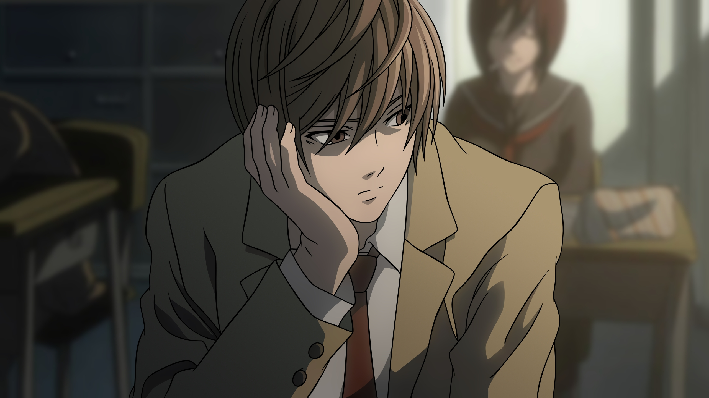
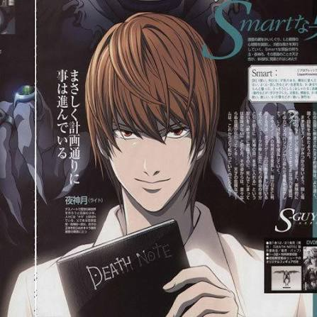
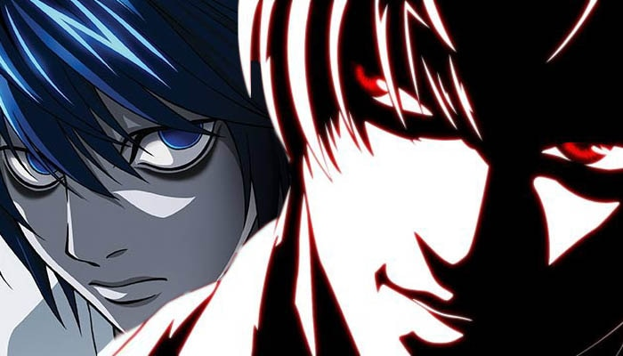
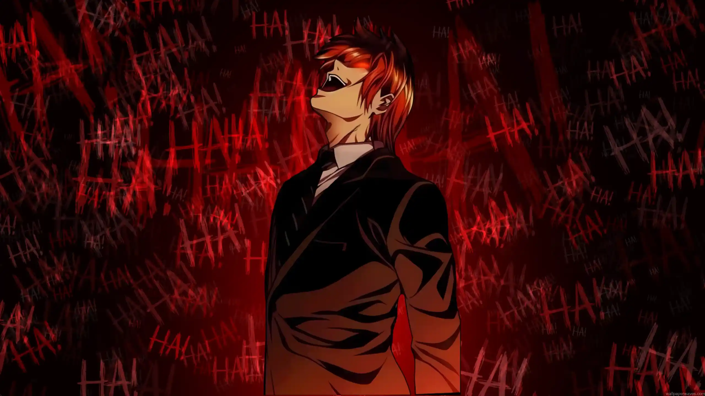

The Bored Genius
An exceptionally brilliant high school senior, Light felt completely disillusioned by a repetitive world plagued by crime. His life changed forever the moment he looked out the window and saw a mysterious notebook fall from the sky.

An exceptionally brilliant high school senior, Light felt completely disillusioned by a repetitive world plagued by crime. His life changed forever the moment he looked out the window and saw a mysterious notebook fall from the sky.

Testing the notebook's lethal power, Light assumed the digital alias of Kira. He began passing absolute judgment on criminals worldwide, quickly amassing a massive cult following that feared his godly wrath.

To mask his identity from the genius detective L, Light joined the tracking task force itself. Every conversation became a high-stakes tactical chess match where a single slip-up meant absolute execution.

Eliminating obstacles one by one, Light's ego broke all boundaries. Fully consumed by his complex, he envisioned himself as a supreme divinity ruling over a righteous society built on fear and absolute authority.